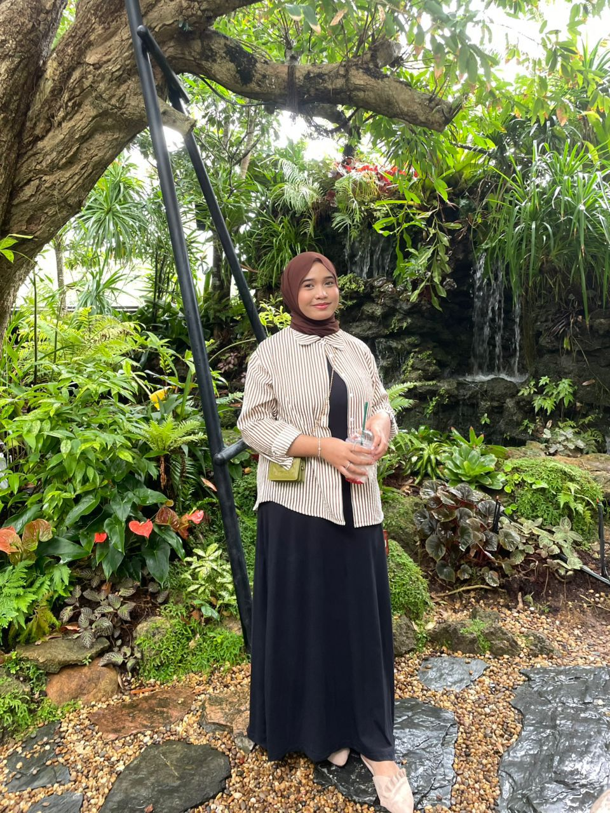
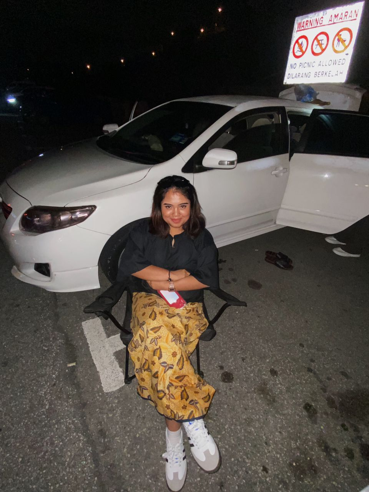
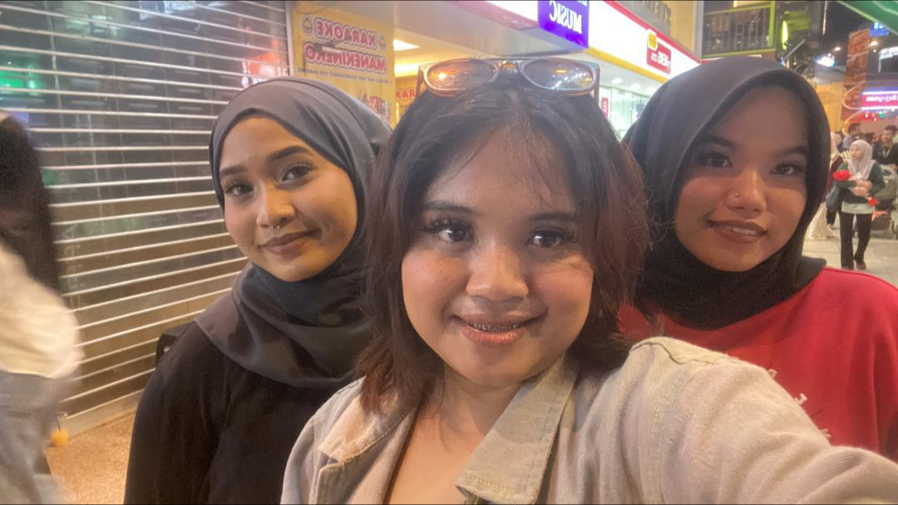
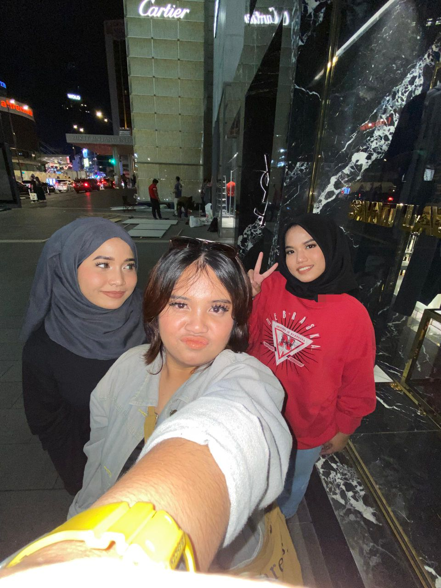
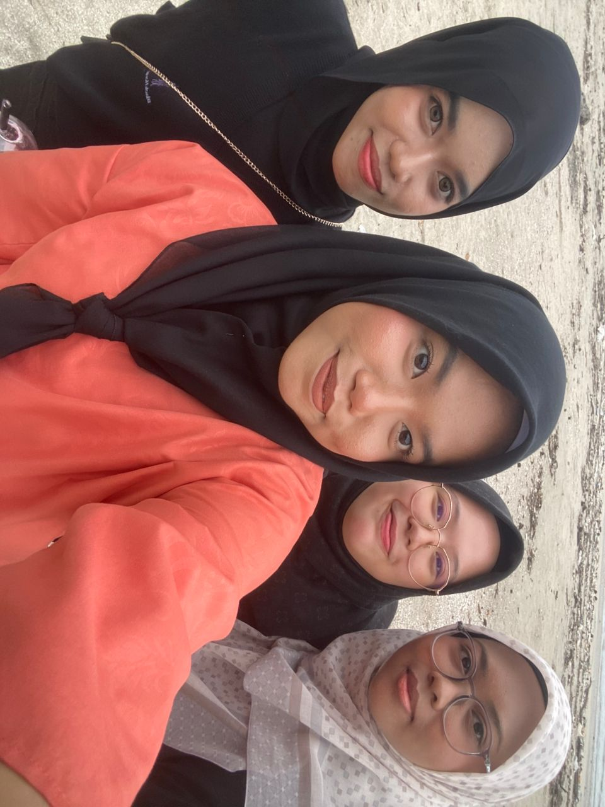
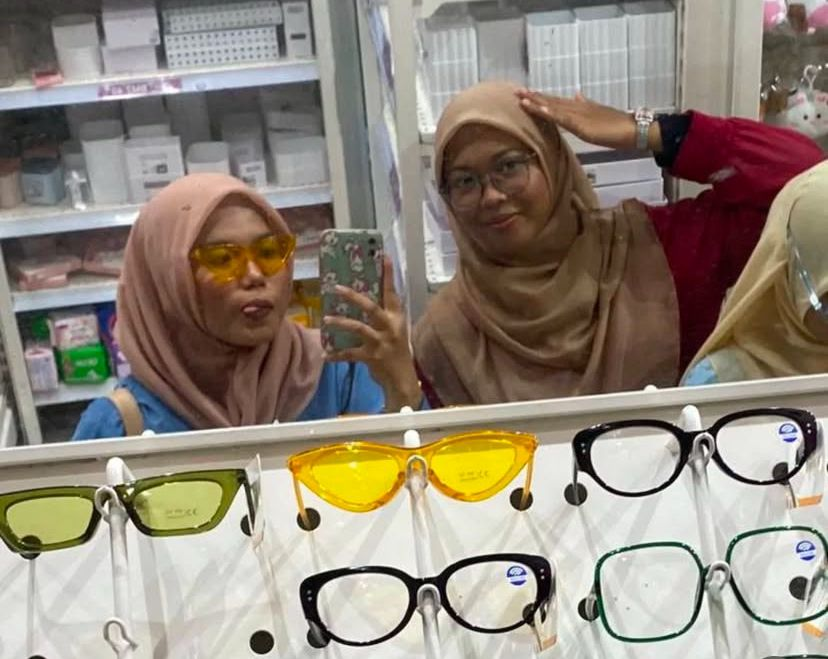
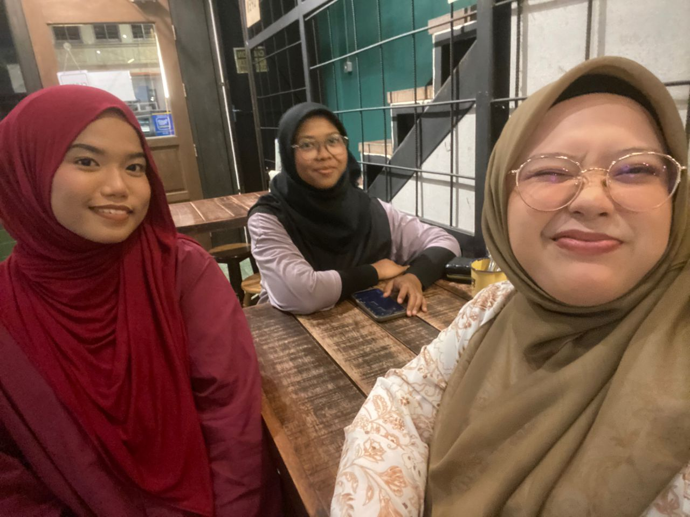

We met in third grade and, in 2024, we've been friends for 12 years. Although life has taken us in different directions, we stay connected meeting once a year when we can. Some are working, others are studying, but we keep in touch through messages and social media like Instagram. We continue to support each other, whether in tough times or celebrating successes. Despite the distance, our friendship remains strong, and we cherish the moments we share together.
|  |  |  |  |
DiPlOmA fRiEnDs
Our friendship started in the class Kesatria co-curriculum class during the first semester through a group assignment, and we grew closer day by day. Even though I only have four friends from my diploma years, I'm grateful to have them to share stories and brighten my days. We often spent time together exploring interesting places around Sungai Petani, enjoying food, and even traveled as far as Perlis, especially Padang Besar. Although my social circle is small, this friendship means a lot to me, and I hope it lasts forever.
|  |  |  |